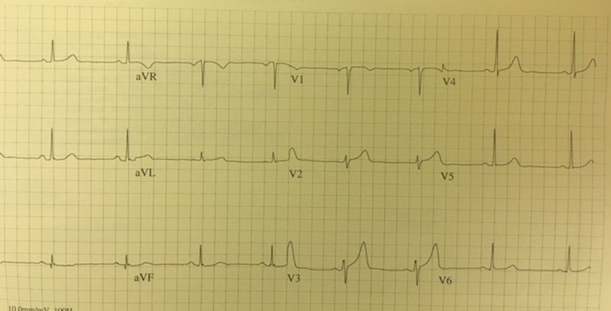
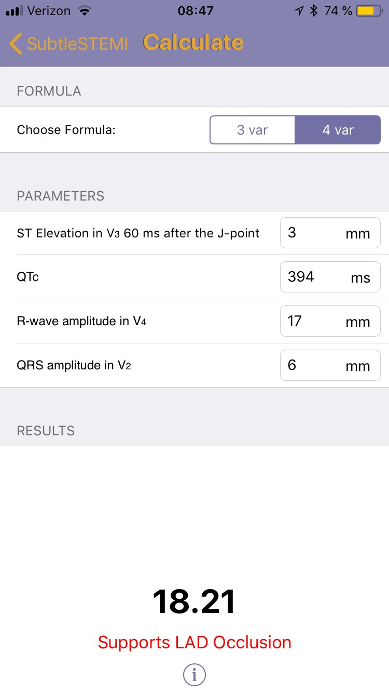
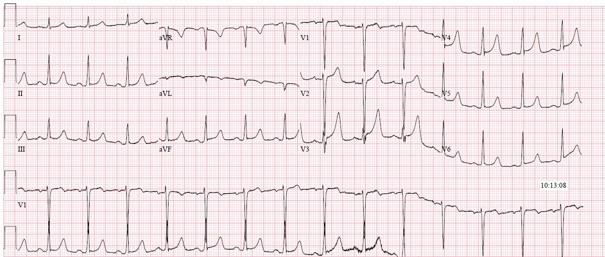
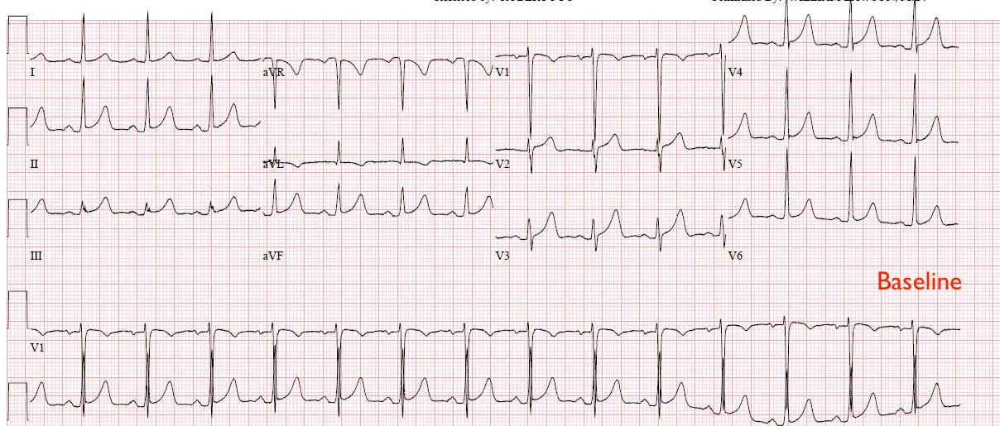
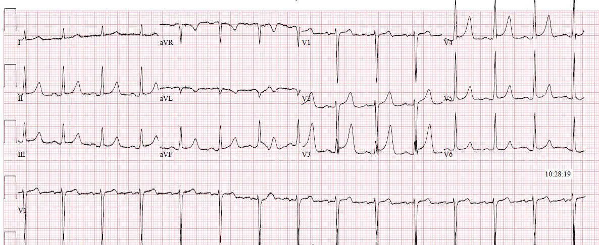
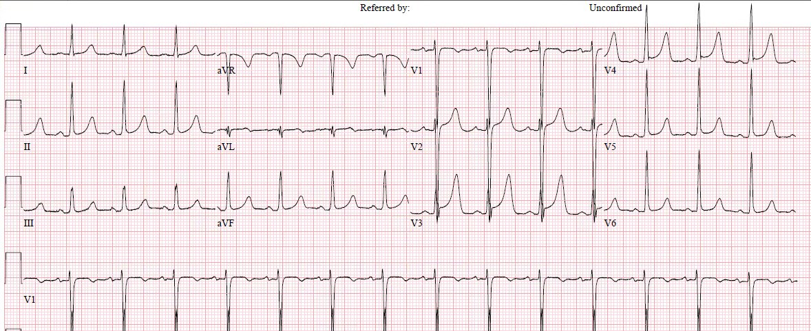

11/08/2018 — “Đây có phải sóng T tối cấp không?” – bạn khuyên nhóm điều trị thế nào trong hai ca này?
Bản dịch tiếng Việt của bài "“Are these hyperacute T-waves?” – what is your recommendation for the team in these two cases?" – Dr. Smith’s ECG Blog. Giữ nguyên toàn bộ 6 hình ảnh của bản gốc.
Bài viết của Pendell Meyers, Steve Smith biên tập
Khi người thực hành học một khái niệm điện tâm đồ mới lần đầu tiên, họ rất tự nhiên phải trải qua một giai đoạn "chuẩn độ" trí óc của mình với dấu hiệu mới, qua các giai đoạn nhận diện quá mức rồi nhận diện chưa đủ. Theo kinh nghiệm của tôi, đây là hiện tượng bình thường trong toàn bộ y khoa, và đặc biệt là trong đọc điện tâm đồ.
Vì gần đây tôi đang thúc đẩy việc nhận diện sóng T tối cấp (hyperacute T waves) trong nhóm của mình, tôi nhận được ngày càng nhiều điện tâm đồ nhắn tin cho tôi, rất đúng đắn, để hỏi “đây có phải sóng T tối cấp không?”
Vậy hãy cùng điểm qua một số “nguyên tắc cơ bản” về sóng T tối cấp:
– Không có định nghĩa chính thức, phổ quát về thế nào là một sóng T tối cấp. Có lẽ chúng có thể được định nghĩa là sự gia tăng tỷ lệ giữa diện tích dưới đoạn ST và sóng T so với diện tích/kích thước của phức bộ QRS. Mặc dù các nhóm trước đây mô tả sóng T tối cấp đơn giản là “cao và đối xứng”(1), Smith và cs. đã cho thấy rằng ở những bệnh nhân có triệu chứng thiếu máu cục bộ và ST chênh lên (STE) ít nhất 1mm ở V2-V4, biên độ tuyệt đối của sóng T không khác nhau giữa bệnh nhân OMI LAD kín đáo và bệnh nhân ST chênh lên biến thể bình thường (“tái cực sớm”). Khi sóng T ở cả hai nhóm được đo dưới dạng tỷ số so với sóng R đi trước, những người có OMI LAD kín đáo có sóng T lớn hơn xét theo tỷ lệ so với những người có ST chênh lên biến thể bình thường (tỷ số T/R = 0.7 với tái cực sớm lành tính (BER) so với 3.1 với OMI LAD) (2).
– Tuy nhiên, theo kinh nghiệm của tôi, chừng đó là chưa đủ. Còn phải xét đến hình thái. Sóng T tối cấp “béo” hơn sóng T bình thường và thường đối xứng hơn (những đặc điểm này cũng làm tăng diện tích dưới STT).
– Sóng T tối cấp đôi khi ấn tượng đến mức chúng có giá trị chẩn đoán bất kể tình huống nào. Những lúc khác, bạn chỉ có thể chẩn đoán sóng T tối cấp bằng cách so sánh các sóng T còn nghi vấn hiện tại với một điện tâm đồ cũ.
– Vì sóng T tối cấp là một phần của Tiến triển OMI (OMI Progression), chúng khu trú theo vùng phân bố bị ảnh hưởng và cũng có các dấu hiệu soi gương khu trú.
– Giống như các dấu hiệu OMI khác, chúng thường rõ nhất ở vùng thiếu máu cục bộ nặng nhất, và giảm dần theo hướng tỏa ra mọi phía từ tâm điểm của OMI.
– Những gì trông giống sóng T tối cấp có thể là hình soi gương của sóng T tái tưới máu ở vùng phân bố đối diện. Nếu vậy, cơn đau sẽ đang giảm dần hoặc đã hết (ví dụ: sóng T tái tưới máu thành sau, sóng T ở aVL sau khi tái tưới máu ở III, sóng T ở III sau khi tái tưới máu ở aVL).
Dưới đây là hai ca như vậy mà tôi nhận được gần đây. Bạn sẽ nói gì với nhóm điều trị?
Ca 1: “Bệnh nhân 45 tuổi đau ngực. Không có điện tâm đồ cũ. V3 có phải tối cấp không?”


Trả lời của tôi: “Tôi không nghĩ có bằng chứng điện tâm đồ của tắc mạch. Tôi sẽ ghi các điện tâm đồ liên tiếp để chắc chắn không có tiến triển hay thay đổi động. Cho tôi biết thêm.”
Tại sao tôi không nghĩ V3 là tối cấp?
Hãy giả sử trong chốc lát rằng chúng ta chỉ có chuyển đạo V3 để xem. Sóng T ở V3 quả thật lớn so với QRS của nó. Tôi không nghĩ nó có dáng “rộng” hay “béo” như phần lớn các sóng T tối cấp. Nó cũng không giống tăng kali máu. Không có biến dạng phần cuối QRS hay sóng Q bệnh lý. Nếu xét riêng, tôi sẽ không thể nói cho bạn biết đây có phải là sóng T tối cấp hay không. Trong bối cảnh phù hợp của các chuyển đạo và đặc điểm xung quanh, nó có thể là.
Bây giờ hãy lùi ra xa và xem xét nó trong bối cảnh, vì chính bối cảnh cho tôi biết rằng sóng T này không phải là tối cấp.
Nếu V3 thực sự đang cho thấy bằng chứng của OMI, thì các “hàng xóm sát vách” của nó thường (nhưng không phải luôn luôn) sẽ giúp chứng thực nhận định này. Khi bạn đọc điện tâm đồ giỏi hơn, bạn thực sự không thể không nhân cách hóa chúng trong đầu. Dr. Smith luôn nói rằng “điện tâm đồ giống như những khuôn mặt, bạn chỉ cần nhận ra chúng.”
Hãy xét phép so sánh này: Bạn nhận được báo cáo từ một ngôi nhà duy nhất rằng có thể đang xảy ra động đất ở khu vực đó. Bạn gọi cho nhà bên cạnh và họ vẫn sinh hoạt bình thường, hoàn toàn không biết bạn đang nói gì. Câu chuyện không được người hàng xóm sát vách chứng thực. Có điều gì đó không khớp.
V2 có điện thế nhỏ và sóng T tương đối lớn, mà nếu tách khỏi bối cảnh thì về lý thuyết cũng có thể là tối cấp.
Tuy nhiên, V4 là hình mẫu mà mọi V4 đều hướng tới: sóng R cao ráo, ngăm đen và đẹp trai, tiếp theo là đoạn ST nằm hoàn hảo trên đường nền, rồi đến sóng T tương xứng hoàn hảo. V4 không đồng tình với ý cho rằng V3 là tối cấp. Người hàng xóm sát vách không hề biết bạn đang nói gì.
Trên điện tâm đồ không có sóng Q bệnh lý, không có biến dạng phần cuối QRS, không có thay đổi soi gương và không có dấu hiệu hình thái ST nào đáng lo ngại.
Vì tò mò, tôi đã đưa nó vào công thức:


Tôi đơn giản là không nghĩ đây là OMI dựa trên điện tâm đồ. Vì vậy tôi nói với nhóm điều trị như thế, nhưng nhắc họ rằng điện tâm đồ không phải là dữ kiện duy nhất trong quyết định chụp thông tim cấp cứu. Bệnh nhân có vẻ không trông bệnh nặng, siêu âm giới hạn trong lúc đau có vẻ không có gì bất thường, và không có mất ổn định huyết động hay điện học.
Họ đã ghi nhiều điện tâm đồ liên tiếp, tất cả đều không thay đổi. Đến một lúc thì cơn đau ngực hết.
Ba lần troponin đều âm tính.
Cuối cùng, bệnh nhân được chụp CT mạch vành (CTCA), cho thấy các động mạch vành bình thường.
Bệnh nhân được cho xuất viện một cách hợp lý với chẩn đoán đau ngực chưa rõ nguyên nhân.
Ca 2: “Nam 40 tuổi đến viện vì đau ngực dữ dội như bị đè nghiến, mô tả là ‘giống như những cơn đau tim trước đây của tôi’, đồng thời đã bỏ lỡ buổi lọc máu. V3 có phải tối cấp không?”


Trả lời của tôi: “Tôi không nghĩ có sóng T tối cấp. Tôi không thấy bằng chứng tắc mạch, nhưng hãy nhớ điện tâm đồ không phải lý do duy nhất để kích hoạt. Tôi sẽ ghi các điện tâm đồ liên tiếp và theo dõi xem có tiến triển không, giả sử không có gì khác đáng lo ngại. Có thể có thay đổi nhẹ do tăng kali máu, cần có điện tâm đồ nền.”
Họ lập tức nhắn tin lại cho tôi: “Troponin T của anh ấy là 1.21 thì có làm thay đổi cách diễn giải của anh không?”
Nói chung, chỉ riêng mức troponin này trong bối cảnh đau ngực dữ dội như bị đè nghiến quả thật đã là chỉ định chuyển phòng thông tim, bất kể điện tâm đồ cho thấy gì.
Trả lời của tôi: “Không thay đổi về điện tâm đồ. Nhưng nó cần được tính đến trong toàn bộ ca bệnh. Điện tâm đồ nền đâu? Câu chuyện bệnh sử là gì?”
Tại sao tôi nghĩ V3 không phải là tối cấp?
Nếu xét riêng lẻ, V3 đúng là có sóng T lớn, cao, to so với phức bộ QRS của nó. Giống như ca trước, nó không béo hay rộng. Tự thân nó sẽ đáng lo ngại nhưng không đủ để chẩn đoán sóng T tối cấp.
Vậy hãy nhìn sang nhà bên cạnh: V2 có điện thế rất cao, theo sau là ST chênh lên nhỏ như dự kiến và sóng T dương mà thực ra rất nhỏ so với một phức bộ QRS lớn như vậy. Nếu V3 là sóng T tối cấp, thì V2 ít nhất cũng phải gợi ý rằng sóng T của nó ít nhiều đáng lo ngại. Nhưng ngược lại, V2 hoàn toàn bình thường so với QRS của nó.
V2 không chứng thực cho V3. V4 cũng vậy.
Ngoài ra, tôi nghĩ đây là một sai lầm thường gặp, xảy ra thường nhất ở chuyển đạo chuyển tiếp. “Chuyển đạo chuyển tiếp” là chuyển đạo trước tim mà ở đó QRS chuyển từ chủ yếu các thành phần âm sang chủ yếu các thành phần dương. Trong ca này, V2 chủ yếu âm, và V4 chủ yếu dương. Do đó V3 là chuyển đạo chuyển tiếp, và gần như đẳng điện. Cả V2 và V4 đều có điện thế đáng kể.
Bạn có thể hỏi “vậy toàn bộ điện thế này đi đâu giữa V2 và V4?”, “thế thì tại sao V3 lại có QRS nhỏ như vậy?” Cách tôi trả lời là nói rằng điện thế ở V3 bị “gấp gọn” bên trong phức bộ QRS. Điều này đôi khi xảy ra ở chuyển đạo chuyển tiếp, vì QRS thường đẳng điện và có nhiều vectơ thành phần mâu thuẫn nhau. Thường gặp nhất, chuyển đạo chuyển tiếp đơn giản là có cùng điện thế QRS tổng thể nhưng với các thành phần R và S bằng nhau. Tuy nhiên, đôi khi chuyển đạo chuyển tiếp tạo ra thứ trông như một phức bộ QRS nhỏ nằm giữa hai phức bộ QRS lớn có điện thế cao. Tôi hình dung điều này như điện thế bị “gấp gọn” vào phức bộ QRS của chuyển đạo chuyển tiếp. Điều này giúp tôi hiểu tại sao sóng T trông lớn như vậy ở chuyển đạo này.
Tuy nhiên, tôi không tìm được y văn nào ủng hộ hay bác bỏ nhận định này.
Bạn cũng có thể hỏi về sóng T âm ở aVL, băn khoăn liệu đây có phải là manh mối của OMI thành dưới hay không. Không, vì các chuyển đạo thành dưới không cho thấy bằng chứng OMI, và QRS ở aVL cũng âm, nên có sóng T âm ở trạng thái nền là điều không bất ngờ.
Đây là điện tâm đồ nền:


Đây là điện tâm đồ ghi lại:


Một điện tâm đồ ghi lại khác, không có thay đổi đáng kể:


Tôi xem lại hồ sơ của bệnh nhân và phát hiện ra rằng anh ấy đã có nhiều lần đến viện tương tự, mỗi lần đều bỏ lỡ lọc máu rồi sau đó đau ngực dữ dội như bị đè nghiến và troponin tăng rất cao, luôn kèm các điện tâm đồ tương tự. Lần đầu tiên, phòng thông tim đã được kích hoạt và bệnh nhân có động mạch vành bình thường, hoàn toàn không có bệnh động mạch vành (CAD). Mỗi lần, troponin T của anh ấy tăng cao hơn 1.0 ng/mL với kiểu tăng rồi giảm đủ để chẩn đoán nhồi máu cơ tim, nhưng rõ ràng không phải nhồi máu cơ tim do tắc. Đây là nhồi máu cơ tim típ 2, nhiều khả năng do nhiều yếu tố khác nhau.
Cảnh báo: Đây là một ca kỳ lạ. Rất bất thường khi nồng độ troponin T thường quy cao đến mức này trong một đợt đau ngực dữ dội như bị đè nghiến mà không có hội chứng vành cấp (ACS). 15% bệnh nhân rối loạn chức năng thận có troponin nền tăng, nhưng thường không quá 5x giới hạn trên tham chiếu, đôi khi lên đến 15x, nhưng hiếm khi cao hơn (3). Troponin T thường quy từ 1.0 ng/mL trở lên gặp nhiều hơn hẳn trong bối cảnh nhồi máu cơ tim do tắc so với nhồi máu cơ tim không do tắc. Nếu không có tiền sử những lần đến viện giống hệt trước đó với kết quả thông tim hoàn toàn âm tính gần đây, thì việc kích hoạt phòng thông tim dựa trên đau ngực dữ dội như bị đè nghiến và troponin tăng cao như vậy là hoàn toàn phù hợp, ngay cả khi không có dấu hiệu điện tâm đồ.
Nhóm điều trị đã tìm được thông tin này, và vì các điện tâm đồ liên tiếp không thay đổi cùng với tiền sử như vậy, họ đã cho bệnh nhân nhập viện để lọc máu cấp cứu. Sau lọc máu, các triệu chứng của anh ấy hết. Troponin tăng rồi giảm, đạt đỉnh 1.64 ng/mL. Troponin nền của anh ấy không rõ. Không tiến hành thông tim.
Cảnh báo: Tôi không nói rằng một sóng T tối cấp luôn phải có bằng chứng chứng thực ở cả hai chuyển đạo lân cận. Tôi chỉ nói rằng kiểm tra cả hai chuyển đạo kề bên là một bước hữu ích để xác định liệu các dấu hiệu ở một chuyển đạo có gợi ý OMI hay không, khi không có các đặc điểm đáng lo ngại hoặc chứng thực nào khác. Dưới đây là một số ca bạn có thể dùng để bảo tôi sai, vì các sóng T tối cấp dường như có một vài chuyển đạo xung quanh mà không phải ai cũng thấy đáng lo ngại:
Phụ nữ 30 tuổi đau ngực với một “điện tâm đồ bình thường” theo máy tính, ca này ở trước viện
OMI trước viện được một nhân viên cấp cứu ngoài viện tuyệt vời nhận ra ngay lập tức
Tuy nhiên, trong cả hai ca, đều có những đặc điểm đáng lo ngại khác, ngay cả khi một trong các chuyển đạo lân cận với sóng T tối cấp tương đối bình thường.
Những điểm cần học:
Chỉ có kinh nghiệm và thời gian mới giúp bạn giỏi hơn trong việc phân biệt sóng T tối cấp với các biến thể bình thường. Hãy xem nhiều ví dụ sau để so sánh:
10 ca sóng T tối cấp thành trước ở V2-V3
10 ca sóng T tối cấp thành trước/thành bên ở V4-V6
10 ca sóng T tối cấp thành dưới
Bỏ sót sóng T tối cấp, sau đó bệnh nhân tử vong
Bệnh nhân 30 tuổi có sóng T tối cấp được chẩn đoán ở trước viện
Bỏ sót sóng T tối cấp, sau đó ngừng tim lúc đang làm thủ tục xuất viện
Sóng T tối cấp bị máy tính đọc là “bình thường”
Một ca sóng T tối cấp khác ở trước viện
Sóng T tối cấp không có định nghĩa chính thức, và đôi khi cần so sánh với các điện tâm đồ cũ và điện tâm đồ ghi lại.
Hãy “tra hỏi” các chuyển đạo lân cận xem chúng có chứng thực cho một dấu hiệu còn nghi vấn hay không.
Kỹ năng phát hiện nhồi máu cơ tim do tắc kín đáo phải được phát triển song song với khả năng loại bỏ các hình ảnh giả. Chúng ta đang cố gắng mang lại tái tưới máu ngay lập tức cho những người bị OMI và tránh gây hại không cần thiết cho những người không bị.
Tài liệu tham khảo:
1) Nikus K, Pahlm O, Wagner G, và cs. Electrocardiographic classification of acute coronary syndromes: a review by a committee of the International Society for Holter and Non-Invasive Electrocardiology. J Electrocardiol 2010;43:91-103.
2) Smith và cs. Electrocardiographic differentiation of early repolarization from subtle anterior ST-segment elevation myocardial infarction. Annals of Emergency Medicine 2012.
3) Vasudevan và cs. Renal function and scaled troponin in patients presenting to the Emergency Department with symptoms of myocardial infarction. Am J Nephrol 2017;45:304-309.
Bình luận của K. Wang:
Những ca bệnh và phần bàn luận hay về sóng T cao ở các chuyển đạo trước tim. Sóng T cao ở các chuyển đạo trước tim nên khiến ta nghĩ đến ba tình trạng, cụ thể là tăng kali máu, thiếu máu cục bộ tối cấp và biến thể bình thường. Các ví dụ điển hình của ba tình trạng này được minh họa trong cuốn “Atlas of Electrocardiography của K. Wang”, trang 171.
Như có thể thấy rõ, chúng trông khác nhau. Hai loại đầu đối xứng trong khi biến thể bình thường thì không (nhánh lên kéo dài hơn nhánh xuống). Trong thiếu máu cục bộ tối cấp, nhánh lên là một đường thẳng, và nhánh xuống cũng vậy, trong khi chúng có dạng “lều” (tented) trong tăng kali máu. Dĩ nhiên, ở đây tôi đã chọn các ví dụ điển hình. Không may là không phải ca nào cũng điển hình và một số ca rơi vào vùng ranh giới, khiến chúng ta phải đau đầu. Nhưng cuộc sống là vậy! Dù sao, người ta vẫn phải biết các ca điển hình trông như thế nào để bắt đầu bàn luận.
Cái hay của Dr. Smith’s ECG blog là nó dựa trên nhiều năm kinh nghiệm lâm sàng của ông, được củng cố bằng chụp mạch vành và kết cục của bệnh nhân.
K. Wang.